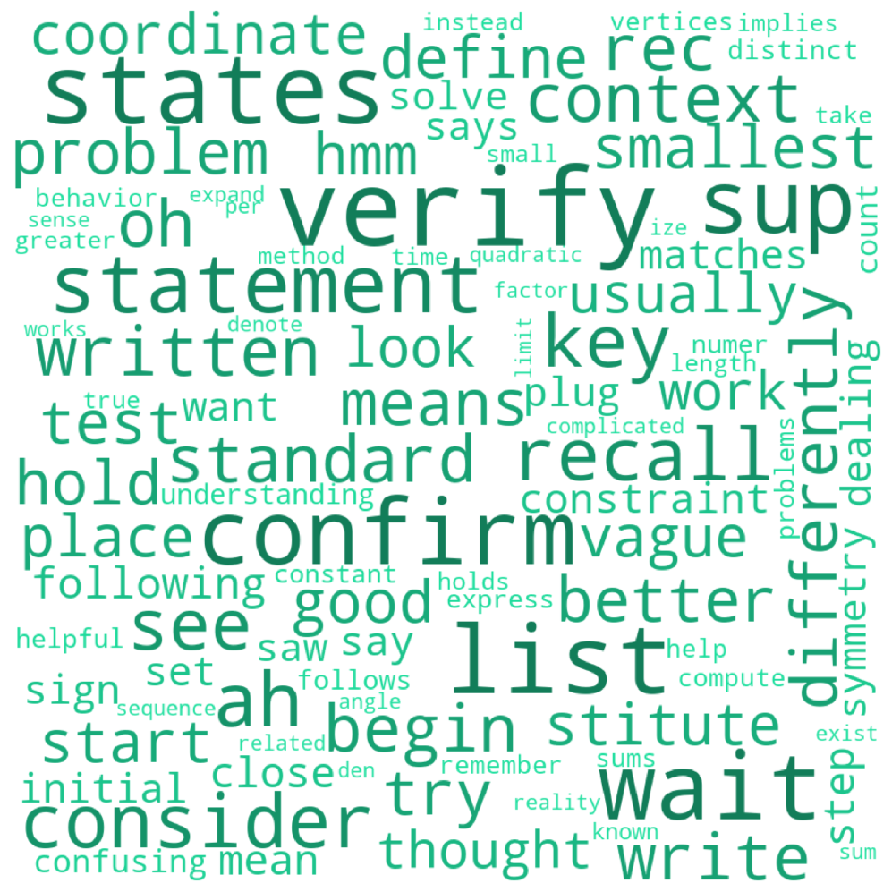
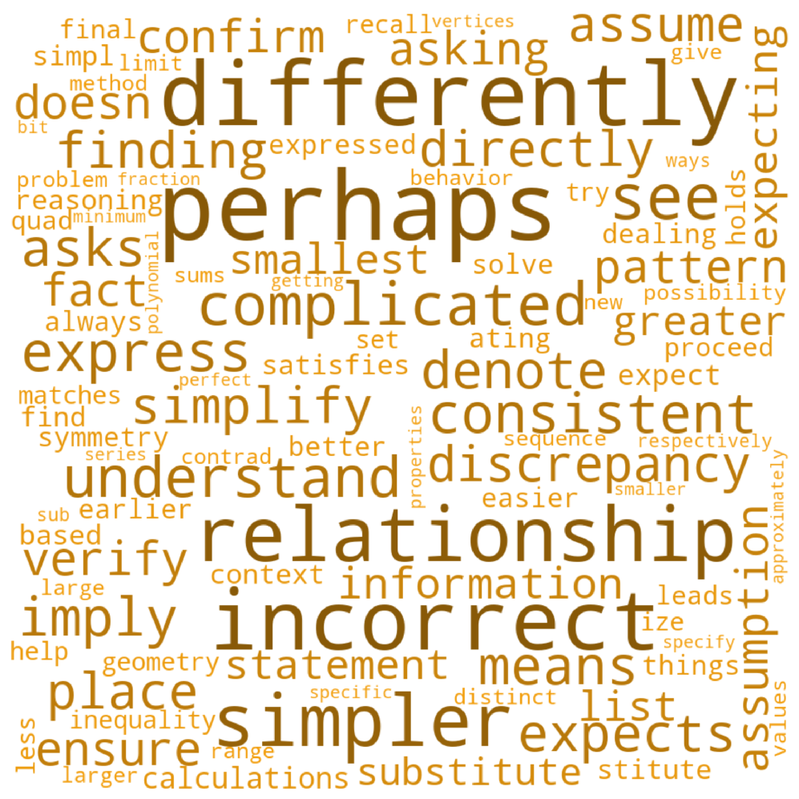
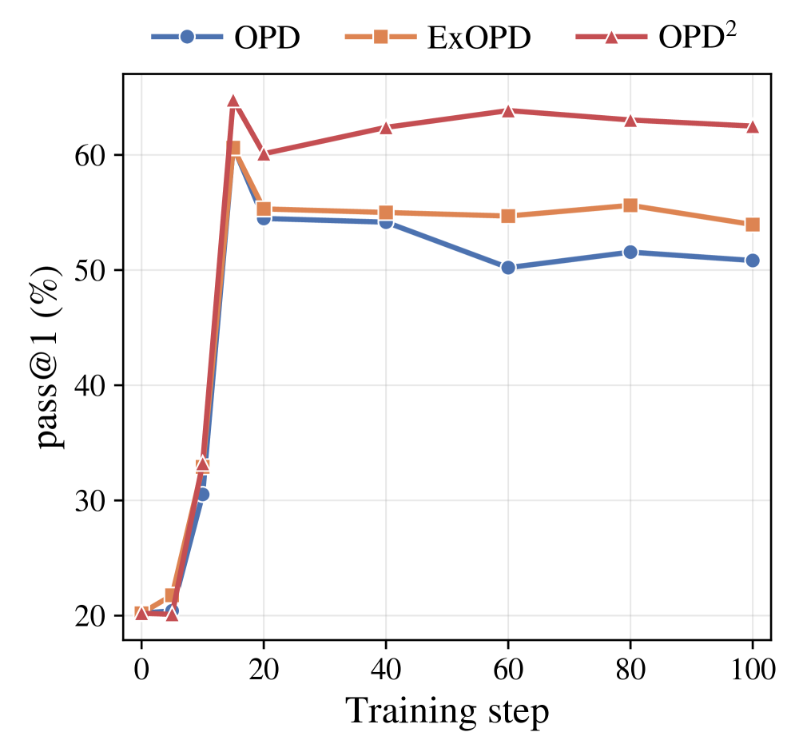

知识蒸馏（Knowledge Distillation）是大模型后训练的核心手段之一。传统的OPD（On-Policy Distillation）让教师模型给学生模型生成的token打分，但一个被长期忽视的问题是：**教师模型的「能力」和「风格偏好」是混杂在一起的**：它既包含推理能力的提升，也保留了预训练阶段的语言习惯。
NAVER AI团队的这篇论文提出了一种极其简洁的改进方案：**用教师模型和其基础模型（Base Model）的差值作为蒸馏信号**，称之为Delta Signal。基于此的OPD² 方法，在Qwen3 1.7B-8B和Gemma4上，数学基准平均提升3-6分，Code和Science领域同样全面超越现有方法。
实验密到吓人：7个数学、3个科学、4个代码基准，覆盖1.7B到8B三种规模，non-thinking和thinking两种模式，再加上Gemma4跨架构验证。
标准OPD的奖励信号是教师和学生模型在某个token上的对数概率差：R_t = log π*(y_t) - log π_θ(y_t)。如果教师给某个token的概率远高于学生，这个token获得正奖励，反之负奖励。
但问题在于，**教师模型是经过多阶段训练的**：先在数十亿token上预训练，再做SFT和RL后训练。后训练阶段给它注入了推理能力，但预训练阶段的语言偏好（比如更爱用 "consider""tackle""perhaps" 这类词）也完整保留了下来。
蒸馏教师模型的全部输出，不等于蒸馏它的「推理能力」：你同时也在蒸馏它的「语言风格」。 而这些风格偏向对推理本身毫无贡献。
OPD² 的核心思路极其直观：**既然教师模型的「推理能力」是通过后训练获得的，那么用推理调优后的教师减去调优前的基础模型，剩下的不就是纯纯的「推理增量」吗？**
具体地，Delta信号的公式为：R_t^Δ = log π*(y_t) - log π_base*(y_t)。这里的 π_base* 是教师模型在推理调优之前的Base版本。
论文通过三个维度的分析，展示了Delta信号和标准OPD信号的本质差异：
论文让Qwen3-1.7B作为学生、Qwen3-4B-Thinking作为教师，采样10K数学题，产出了三组词云。结果清晰得惊人：
标准OPD增强的词偏向通用偏好：如 "see""try""verify""confirm"，这些词更多是教师对答案的验证行为，而非推理本身。
Delta信号则精密地「炼」出了推理连接词："hence""note""instead""however""yet"：这些都是逻辑推理中的转折和连接要害。原本在教师预训练中吸收的验证性语言习惯，被Delta信号干净地过滤掉了。

论文设计了一个巧妙实验：用故意包含错误推理步骤的简单问题，观察OPD和Delta的token级信号差异。
标准OPD在错误推理部分仍然输出正信号：因为教师和学生在这个区域都产生强负信号，但学生的负信号更强，导致OPD奖励变成了正数。这等于在奖励错误的推理轨迹。
Delta信号则完全不同：教师和基础模型同源，推理调优后的教师对错误token更敏感，两者形成「正确-错误」的优劣关系。Delta信号在错误推理上给出负奖励，在正确推导上给出正奖励，信号与推理正确性的相关度远高于OPD。

论文进一步从Math、Code、Science三个领域各采样10K问题（共约160M token），统计了每个token从OPD换到Delta后的信号强度变化。
结果同样令人信服：Delta信号在所有领域都显著增强了逻辑连接词（hence增强57-60%、however增强39-55%、thus增强60%），并**抑制了不确定性表达**（perhaps被抑制38-49%）和通用叙述词（tackle、look、consider）。
这意味着Delta信号正在系统地剔除教师模型中那些「与推理无关的语言杂质」，只保留真正属于推理能力的增量。
Delta信号虽然好，但有一个理论问题：它的奖励计算不涉及学生的概率分布，因此**如果只用Delta信号训练，学生的收敛点是一个one-hot向量**（在最强置信token上概率为1）。虽然这个理论极值在实际中达不到，但仍可能造成训练不稳定。
论文为此设计了两个精巧的修复：
利用on-policy采样的特性，对Delta信号和OPD信号分别减去它们在当前策略分布下的期望值。这类似于RL中的advantage函数：**某个token的奖励不是看绝对大小，而是看它相对于「平均token」好多少**。
实现上，论文通过计算top-1024 token的期望奖励来完成centering，既节省GPU内存，又保证了中心化的精度。
论文提出了一个优雅的条件：只在Delta信号和标准OPD信号方向一致时（两者乘积>0），才使用Delta信号作为训练信号；冲突时梯度设为0。
这个设计的精妙之处在于：当学生的概率已经和教师一致时（π_θ = π*），条件自然触发关闭：梯度为0，训练停止。这完美解决了Delta信号的收敛点问题。
消融实验（表8）证明：Delta信号本身贡献了绝大多数的性能提升，去掉它后性能下降最大；Centering和Joint Conditioning提供辅助增益。
论文的实验框架极其完整：7个数学基准（含AIME24/25、AMC23、MATH500）、3个科学基准（GPQA、SuperGPQA、SciBench）、4个代码基准（CodeContests、CodeForces、LiveCodeBench），覆盖Qwen3的1.7B/4B/8B三种规模，分别测试non-thinking和thinking两种模式，还补了Gemma4-E4B-it的跨架构验证。
在non-thinking模式下，OPD² 在所有三个领域全面领先。数学上，Qwen3-1.7B从34.8提升到54.6（+19.8），4B达到70.3，8B达到71.6。
最亮眼的结果：4B模型用OPD² 训练的数学成绩（70.3），已经超过了8B模型用ExOPD的成绩（67.8）：算力减半，效果反超。
Code领域，1.7B模型上OPD² 比ExOPD提升4.8分（29.4 vs 24.6），Science上同样全面领先。
Thinking模式下的Qwen3已经是顶级推理模型，基线非常高。标准OPD甚至经常出现负优化（数学上三种规模全部退步），ExOPD也只带来有限的提升。
OPD² 是唯一一个在所有三种规模、所有领域上都实现正向提升的方法。数学上1.7B从59.2到62.7，4B从73.3到74.8，8B从73.7到75.9。AIME25上8B模型的score从64.0提升到66.9，HMMT25从44.3跃升到52.3：这些可都是竞赛级难度的基准。
最令人信服的泛化实验在Gemma4-E4B-it上。标准OPD直接让性能崩盘（数学从60.6掉到58.9，Code从55.2掉到36.9）。ExOPD有一定恢复但Code仍掉10分。
OPD² 是唯一在不同架构上做到「不崩且提升」的方法：数学67.8（+7.2），Code保留接近基准（49.5 vs 55.2），Science 48.8（+1.8）。这说明Delta信号不是Qwen3的架构特异性技巧，而是知识蒸馏的通用改进。
论文对比了三种方法在整个训练过程中的性能曲线。标准OPD和ExOPD都在训练早期冲到峰值，之后快速衰减。
OPD² 在早期达到更高峰值，并且在后续训练中始终维持这个优势，不会像其他方法那样一路下滑。这意味着OPD² 不需要精挑checkpoint：直接在最后一轮就能拿到最好结果。

OPD² 比标准OPD多运行一次教师基础模型的前向传播，因此训练时间增加约24-28%（Qwen3）或8%（Gemma4）。但这个开销和ExOPD基本持平。考虑到100步就收敛的训练规模和性能提升幅度，这个代价完全是值得的。
参考：https://arxiv.org/html/2607.15161v1